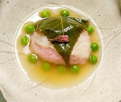

桜鯛のおこわ蒸し
- 調理時間：70分
- （一人当たり）
- カロリー：219kcal
- たんぱく質：9.8g
- 脂質：3.6g
- 炭水化物：34.7g
- 塩分：1.9g


＜2人分＞
- 鯛（切り身）
- 1/2切
- ・もち米
- 0.5合(75g)
- ・水
- 75g
- 桜の葉の塩漬け
- 4～6枚
A
- ・だし汁
- 200ml
- ・薄口醤油
- 小さじ2
- ・塩
- ひとつまみ
- ・水溶き片栗粉
- 適量
- グリンピース
- 大さじ1
- 桜の花の塩漬け
- 2つ
B


- もち米を洗って、分量の水を加え、炊飯器で炊く。（A）
炊けたもち米に塩（分量外）をひとつまみ加え、混ぜる。 - 鯛の切り身は4等分に切り、塩（分量外）をふって15分置く。
水気がでたらふき取る。
電子レンジ600ｗで１～2分加熱する。 - 桜の葉と花の塩漬けは各々、水に浸けて塩抜きする。
- もち米をおはぎの要領で丸くのばし、間に②の鯛を挟んで包み込む。
さらに鯛一切れと一緒に葉でくるむ。
同様に２つ作る。
蒸し器で5分位蒸す。 - 小鍋にだし汁を入れて温め、グリンピースを加えてさっと煮る。
薄口醤油、塩で味をととのえ、水溶き片栗粉でとろみをつける。（B） - ④を器に盛り付け、餡を掛け、桜の花を飾り完成。
桜鯛のおこわ蒸し
柳緑花紅（やなぎはみどり、はなはくれない）といわれるように、緑の合間から桜を眺める奥ゆかしい季節も過ぎたころでしょうか。桜はあっという間に散ってしまいます。その引き際の潔さこそが魅力なのかもしれませんが。
この時期は、料理にも桜の花や葉の塩漬けが重宝されます。独特の香りは「クマリン」という香気成分でリラックス効果があります。何かと疲れがたまる新年度、香りで彩りを添えましょう。